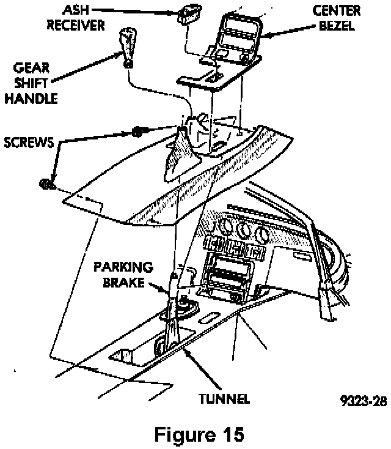
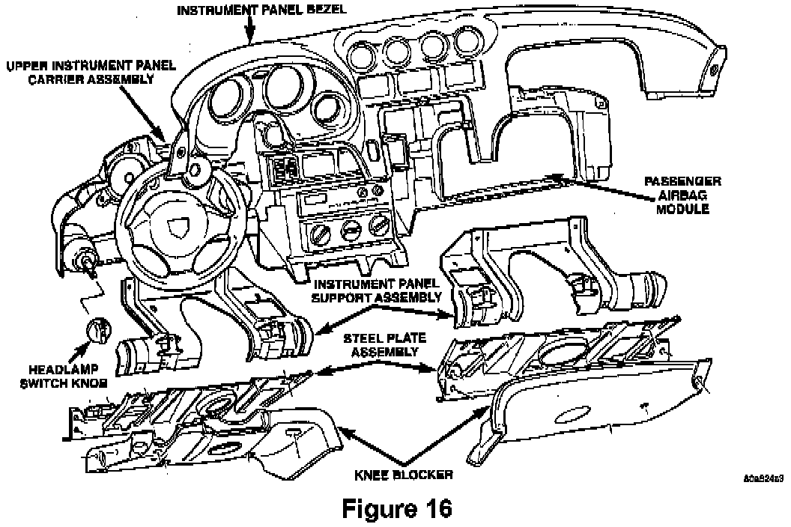
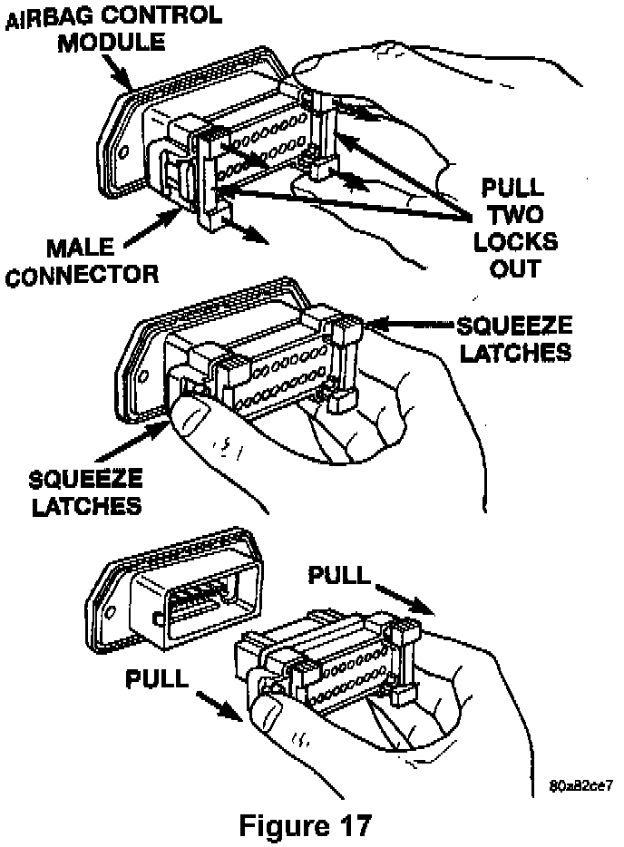
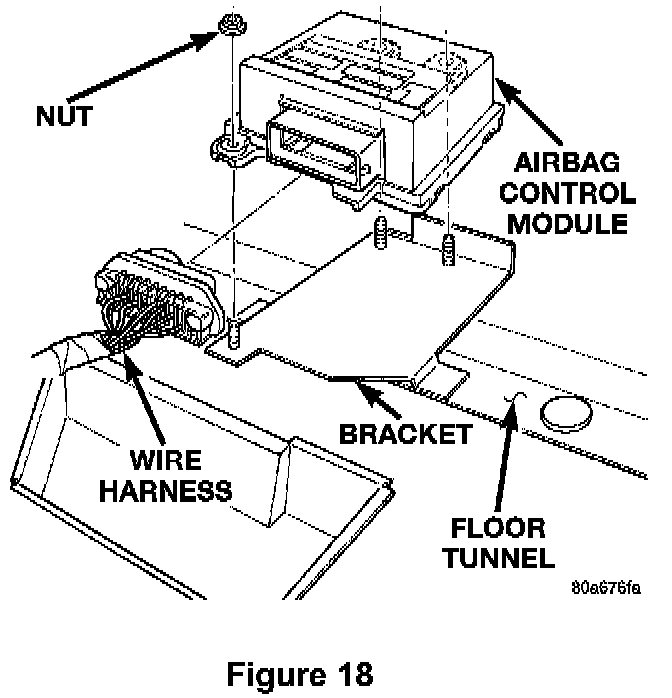

Service Procedure For Viper GTS Coupe (SR) Vehicles:
1. Remove the left rear wheel and tire assembly.2. Remove the left rear wheel well inner splash shield.
3. With the ignition key in the OFF position, disconnect and isolate the negative battery cable. WAIT TWO (2) MINUTES FOR THE SYSTEM CAPACITOR TO DISCHARGE BEFORE CONTINUING.
Note:
To enhance customer satisfaction, remember to record all radio settings before disconnecting the battery and to reset all electronic memory (clock, radio settings, etc.) when you have completed the service procedure.

4. Remove the instrument panel center bezel and then disconnect the rear window defogger switch, the power window switches and the lighter (Figure 15).

5. Remove the right and left knee blockers (Figure 16).
6. Remove the headlamp switch knob by inserting a paper clip in the hole under the knob and pushing gently to release the lock clip (Figure 16).
7. Remove the tilt steering handle.
8. Remove the upper steering column shroud.
9. Remove the instrument panel bezel (Figure 16).
NOTE:
Be careful not to break the headlamp switch lock tab when removing the I/P bezel.
10. Remove the two (2) radio mounting screws.
11. Remove the radio and disconnect the wire connector, coaxial cable and antenna cable.
12. Remove the radio from the vehicle.
13. Remove the HVAC control module. Only disconnect the vacuum and electrical connectors. Do not disconnect the cable. Set the control module aside.

14. Reach through the radio opening and disconnect the ACM wiring connector (Figure 17):
A. Pull the two white lock bars out about 1/8" (3 mm) on each side of the connector.
B. Squeeze the two (2) connector latch tabs between your thumb and forefinger while pulling the connector out of the module.

15. Remove the three (3) nuts that secure the ACM mounting bracket to the floor pan transmission tunnel (Figure 18).
16. Slide the ACM and bracket assembly out through the radio opening.
17. Install the provided ACM and bracket assembly with the arrow on the module pointing forward.
18. Tighten the three (3) ACM to floorpan transmission tunnel attaching screws to 95 in-lbs (10.7 N.m).
19. Connect the wiring connector to the ACM. Make sure it is fully seated and the lock bars are engaged.
20. Connect the HVAC control head electrical and vacuum connectors. Install the HVAC control module.
21. Connect the radio wire connector, coaxial cable and antenna cable.
22. Install the radio into the instrument panel and tighten the two (2) mounting screws.
23. Install the instrument panel bezel (Figure 16).
NOTE:
Be careful when installing the I/P bezel. Do not break the headlamp switch lock tab.
24. Install the headlamp switch knob (Figure 16).
25. Install the upper steering column cover.
26. Install the tilt steering handle.
27. Install the right and left knee blockers (Figure 16).
28. Connect the rear window defogger switch, the power window switches and the lighter and then install the instrument panel center bezel (Figure 15).
29. Connect the DRB III, turn the ignition switch to the ON position and then exit the vehicle with the DRB III.
30. Reconnect the negative battery cable and then watch the airbag light in the instrument cluster, it should light for about 6-8 seconds and then go out.
31. With the DRB III, verify that no system diagnostic codes have been set.
NOTE:
If the airbag warning lamp fails to light or the light stays on, or the DRB displays a diagnostic code, a system malfunction exists. Diagnose and repair the condition following normal service procedures.
32. Install the left rear wheel well inner splash shield.
33. Install the left rear wheel and tire assembly.